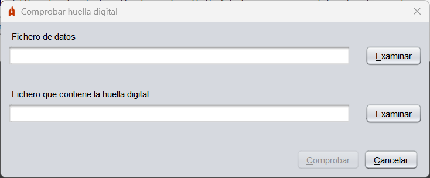

Plugins
Al costat d'Autofirma es distribueixen una sèrie de plugins que permeten agregar a l'aplicació funcions addicionals.
Càlcul i comprovació d'empremtes digitals
Aquest plugin agrega a Autofirma opcions per a calcular l'empremta digital (hash) d'un fitxer o de tots els fitxers d'un directori i comprovar aquestes mateixes petjades que s'han generat.
Una vegada s'instal·la el plugin, apareixerà en la barra de menús d'Autofirma l'opció "Empremtes digitals" amb les diferents operacions que es poden realitzar.
- Calcular empremta digital: Permet calcular l'hash d'un fitxer i guardar-lo a disc. El format i l'extensió del fitxer d'hash variarà segons el format seleccionat.

- Fitxer sobre el qual calcular l'empremta digital: Fitxer del qual desitgem calcular l'hash.
- Algorisme d'empremta digital: Algorisme d'hash.
- Format de l'empremta digital: Codificació emprada per a guardar l'hash:
- Hexadecimal en ASCII (Base16): La petjada s'emmagatzemarà com a cadena hexadecimal termiada en 'h'.
- Base64: La petjada s'emmagatzemarà en Base 64.
- Binari: La petjada s'emmagatzemarà sense codificar.
- Copiar empremta digital al portapapers: En activar aquesta opció, a més de guardar l'hash en fitxer, es copiarà al portapapers. L'hash es copiarà amb la codificació del format seleccionat o, si es va seleccionar el format binari, en hexadecimal.
- Comprovar empremta digital: Permet comprovar l'hash d'un fitxer.

- Fitxer de dades: Fitxer al qual correspon l'empremta digital que es desitja comprovar.
- Fitxer que conté l'empremta digital: Fitxer amb l'empremta digital.
- Calcular empremta digital en directori: Permet calcular l'hash dels fitxers d'un directori.

- Directori sobre el qual calcular les empremtes digitals: Directori amb els fitxers dels quals volem calcular l'empremta digital.
- Algorisme d'empremta digital: Algorisme d'hash.
- Recursivo: En activar-la es calcularà també l'hash dels fitxers localitzats en els subdirectoris del directori seleccionat.
- Comprovar empremta digital en directori: Permet comprovar l'hash dels fitxers d'un directori.

- Directori: Directori amb els fitxers als quals corresponen les empremtes digitals que es desitgen comprovar.
- Fitxer d'empremtes digitals: Fitxer amb les empremtes digitals que es comprovaran.
En instal·lar el plugin d'empremtes digitals en sistemes Windows, també s'agreguen les opcions de generar i comprovar empremtes digitals en el menú contextual de fitxers i directoris del sistema.
Les opcions que apareixen són:
- Generar empremta digital: Aquesta opció apareix en el menú contextual de tots els fitxers i directoris i permet generar l'hash del fitxer o dels fitxers del directori.
- Comprovar empremta digital: Aquesta opció apareix en el menú contextual dels fitxers d'hashes (.hash, .hashb64, .hashfiles i .hexhash) i permet seleccionar el fitxer o directori del qual es desitja comprovar l'hash.